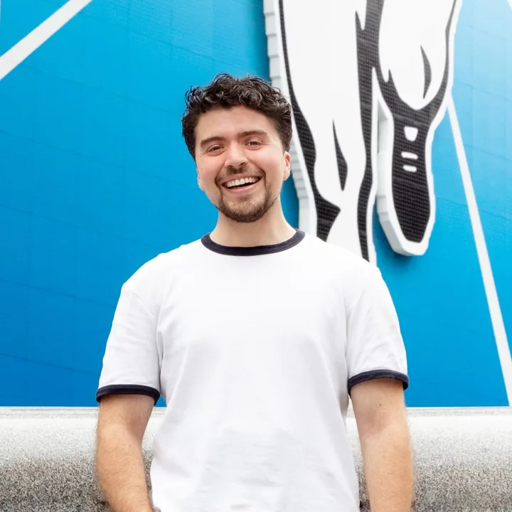
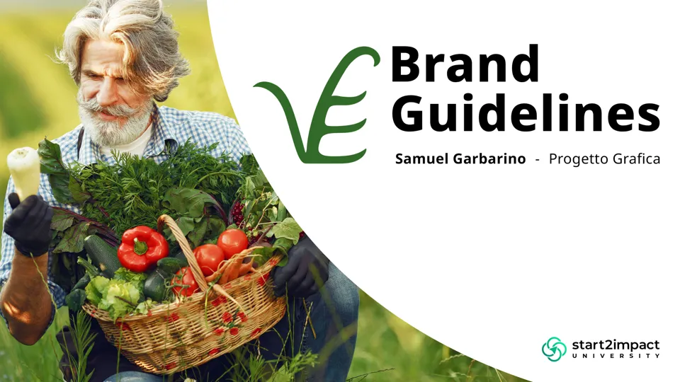

UX/UI designer junior a Brescia
Samuel Garbarino
Progetto interfacce chiare e accessibili per aziende e team di design. Parto dalla ricerca: capisco chi userà una cosa e cosa gli impedisce di farlo, poi disegno.
Disponibile da subito, da remoto o a Brescia

Progetti in evidenza
Tutti i progetti-

2026 · Wireframing · 5 pagine · 3 personas
JojobRT: wireframe e wireflow
Wireframe desktop e mobile di cinque pagine, wireflow per tre personas e nuova sitemap.
Apri il case study (PDF, 7,5 MB): JojobRT wireframe e wireflow, si apre in una nuova scheda -

2026 · Accessibilità · WCAG · 5 pagine
JojobRT: audit di accessibilità
Personas con esigenze visive, cognitive e motorie, analisi WCAG su cinque pagine reali e interventi prioritari.
Apri il case study (PDF, 4,9 MB): JojobRT audit di accessibilità, si apre in una nuova scheda -

2025 · Brand identity · 5 colori
Veganow: linee guida del brand
Naming, logo disegnato a mano, palette a cinque colori, tipografia e linee guida per i social.
Apri il case study (PDF, 2,2 MB): Veganow linee guida del brand, si apre in una nuova scheda
Come lavoro
Ricerca
Capisco chi usa il prodotto e cosa lo blocca: valutazione euristica, benchmark, sondaggi.
Wireframe
Struttura e flussi prima dei colori, mobile first.
Interfaccia
Design system e prototipo navigabile in Figma.
Test
Accessibilità WCAG 2.2 e prove con persone reali.
Competenze e strumenti
Chi sono
Prima di disegnare una schermata voglio capire chi la userà e dove si blocca.
Vengo dalla grafica e sto completando il Master UX/UI di Start2impact. Oggi lavoro da remoto alla comunicazione visiva e al wayfinding di 12 strutture in tutta Italia, in un team di 10 persone.